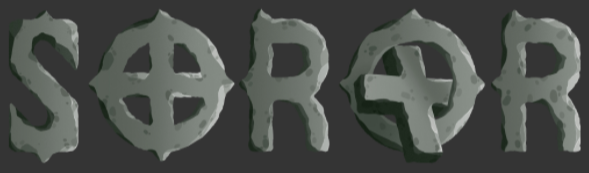
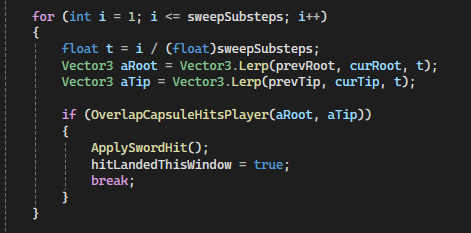
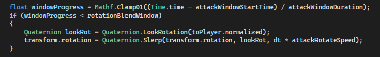

Soror is a passion-driven boss rush created as part of my bachelor’s thesis, developed by a 4-person team. The game focuses on parrying enemy attacks, avoiding AOE patterns, and managing posture and health systems.
I worked as the AI & gameplay programmer, responsible for boss behaviour logic and AOE systems, including a custom Unity Editor used to design attack shapes and sequence complex boss actions such as chasing, attacking, stunning, and recovery.

